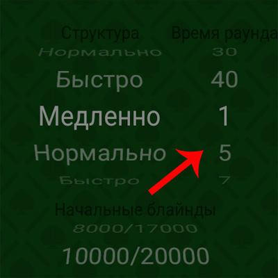
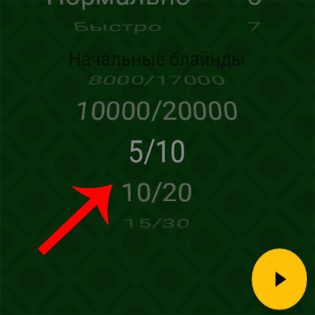
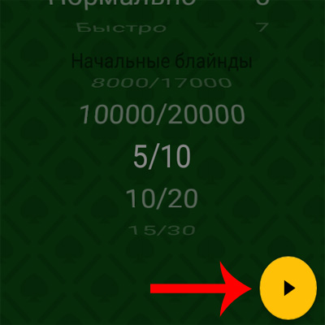

Пользоваться таймером очень просто. Что бы начать турнир :
1 - Выберите структуру блайндов:
2 - Выберите время, отведенное на раунд:
3 - Выберите стартовые блайнды:
4 - Нажмите кнопку плей и приступайте к игре!
Вы можете остановить или поставить турнир на паузу в любое время. Напоминания будут работать, даже если вы поставите свое устройство на блокировку.
Спасибо, что установили наше приложение.